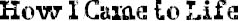

I LIKE WHEN Mom tells this story because it makes me laugh so much. It’s not funny in the way a joke is funny, but when Mom tells it, Via and I just start cracking up.
So when I was in my mom’s stomach, no one had any idea I would come out looking the way I look. Mom had had Via four years before, and that had been such a “walk in the park” (Mom’s expression) that there was no reason to run any special tests. About two months before I was born, the doctors realized there was something wrong with my face, but they didn’t think it was going to be bad. They told Mom and Dad I had a cleft palate and some other stuff going on. They called it “small anomalies.”
There were two nurses in the delivery room the night I was born. One was very nice and sweet. The other one, Mom said, did not seem at all nice or sweet. She had very big arms and (here comes the funny part), she kept farting. Like, she’d bring Mom some ice chips, and then fart. She’d check Mom’s blood pressure, and fart. Mom says it was unbelievable because the nurse never even said excuse me! Meanwhile, Mom’s regular doctor wasn’t on duty that night, so Mom got stuck with this cranky kid doctor she and Dad nicknamed Doogie after some old TV show or something (they didn’t actually call him that to his face). But Mom says that even though everyone in the room was kind of grumpy, Dad kept making her laugh all night long.
When I came out of Mom’s stomach, she said the whole room got very quiet. Mom didn’t even get a chance to look at me because the nice nurse immediately rushed me out of the room. Dad was in such a hurry to follow her that he dropped the video camera, which broke into a million pieces. And then Mom got very upset and tried to get out of bed to see where they were going, but the farting nurse put her very big arms on Mom to keep her down in the bed. They were practically fighting, because Mom was hysterical and the farting nurse was yelling at her to stay calm, and then they both started screaming for the doctor. But guess what? He had fainted! Right on the floor! So when the farting nurse saw that he had fainted, she started pushing him with her foot to get him to wake up, yelling at him the whole time: “What kind of doctor are you? What kind of doctor are you? Get up! Get up!” And then all of a sudden she let out the biggest, loudest, smelliest fart in the history of farts. Mom thinks it was actually the fart that finally woke the doctor up. Anyway, when Mom tells this story, she acts out all the parts—including the farting noises—and it is so, so, so, so funny!
Mom says the farting nurse turned out to be a very nice woman. She stayed with Mom the whole time. Didn’t leave her side even after Dad came back and the doctors told them how sick I was. Mom remembers exactly what the nurse whispered in her ear when the doctor told her I probably wouldn’t live through the night: “Everyone born of God overcometh the world.” And the next day, after I had lived through the night, it was that nurse who held Mom’s hand when they brought her to meet me for the first time.
Mom says by then they had told her all about me. She had been preparing herself for the seeing of me. But she says that when she looked down into my tiny mushed-up face for the first time, all she could see was how pretty my eyes were.
Mom is beautiful, by the way. And Dad is handsome. Via is pretty. In case you were wondering.